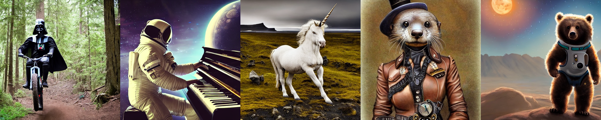
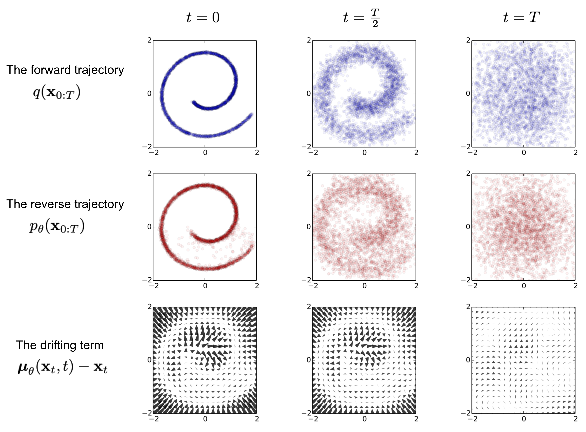
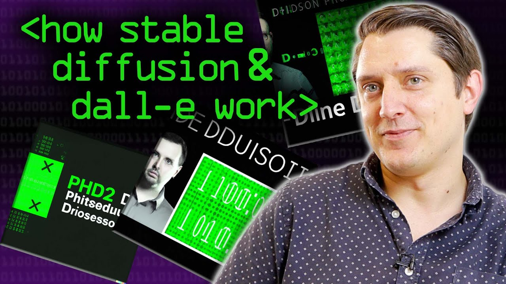
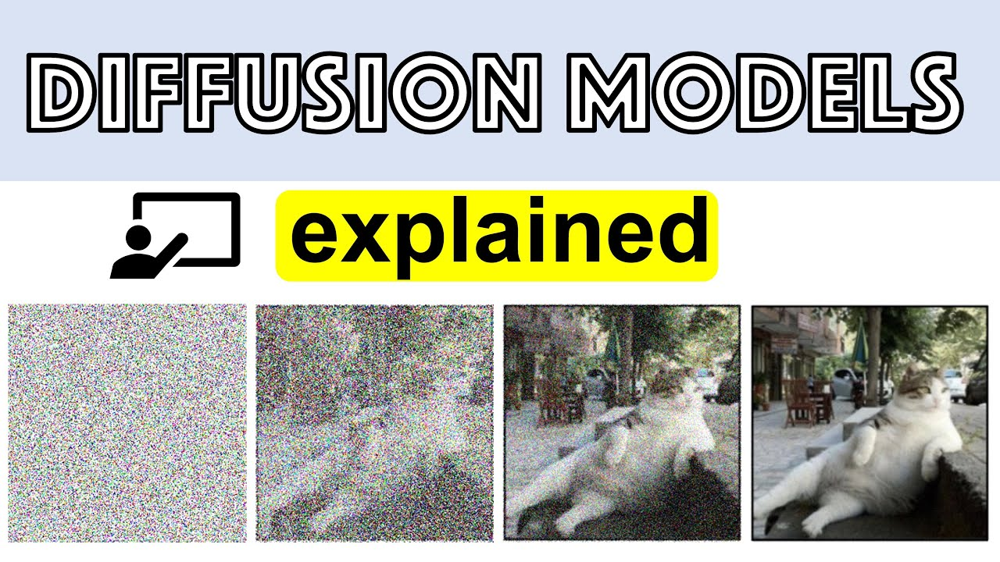
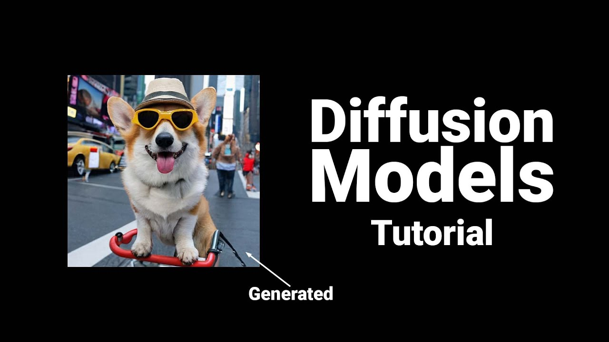
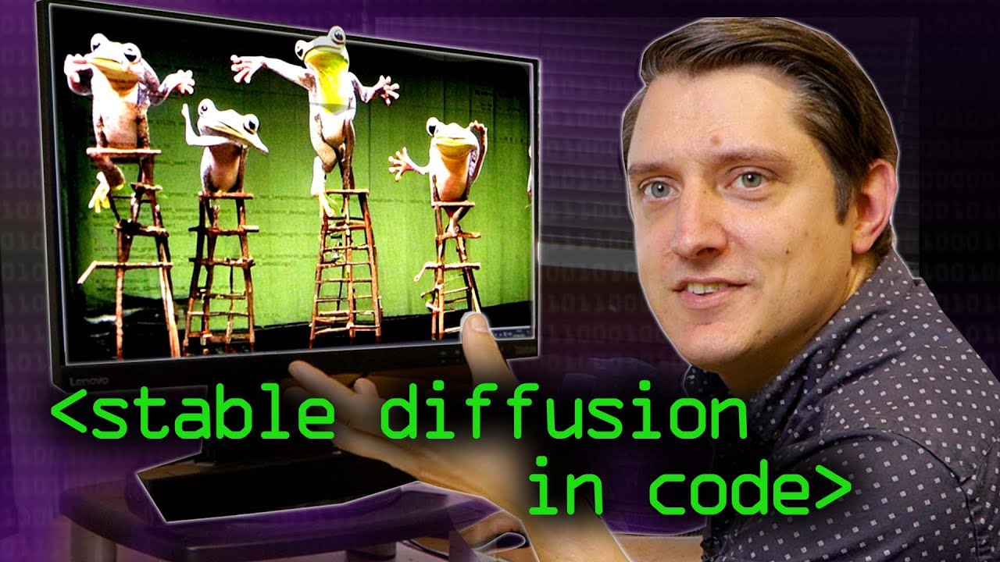
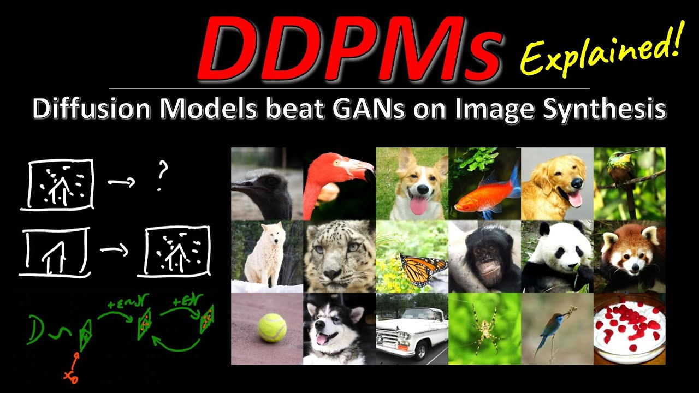

扩散模型 (Diffusion Models)
Stable Diffusion、DALL·E 2、Sora 背后的生成范式。一句话：它通过「学会把一张图一步步加噪直到变成纯噪声」的反过程——从纯噪声出发，逐步去噪，"无中生有"地造出图像。训练只需让网络去预测被加进去的噪声。

1 · 这是什么 & 为什么重要
扩散模型是一类生成模型：学习数据分布，从而能生成全新样本（图像、音频、视频…）。它的绝招是把"生成"这件难事，拆成许多个"去掉一点噪声"的简单小步。
核心直觉：拿一张真实图片，一点点加高斯噪声，加很多步后变成纯静电雪花（前向过程，不需要学习，是固定的数学）。训练一个神经网络去反转这个过程——给它一张带噪图，让它预测"刚加进去的噪声是什么"。要生成新图，就从纯噪声出发，反复用网络去掉一点预测噪声，最终一张清晰图像"浮现"出来。所有的学习，都在这个反向去噪里。

和 GAN / VAE 的对比
| 维度 | 扩散模型 | GAN | VAE |
|---|---|---|---|
| 训练稳定性 | 高（单一 MSE 回归损失） | 较低（对抗博弈，易模式崩溃） | 高（ELBO） |
| 样本质量 | 顶尖（DDPM CIFAR-10 FID 3.17） | 高（曾长期领先） | 通常较糊 |
| 多样性/覆盖 | 强（似然族） | 较弱（易模式崩溃） | 较好 |
| 采样速度 | 慢（要跑很多步） | 快（一次前向） | 快（一次前向） |
说明：稳定性/多样性/速度为社区共识性质，非单一数字；FID 来自 DDPM 论文。对比表参考 Lilian Weng。
2 · 学习路线图
扩散模型数学密度不低，按四段走最稳；每段配了对应资源（详链见 视频 与各节）。
① 入门 · 建直觉
- Computerphile《AI 图像生成原理》10 分钟
- AssemblyAI 入门博客
- (中文) 李宏毅 Diffusion 课
- 玩本页 加噪/去噪 demo
② 进阶 · 懂数学
- 黄佳斌《How I Understand Diffusion》
- Lilian Weng 全套公式
- Calvin Luo 统一视角（ELBO/三种目标）
③ 实践 · 跑起来
- HF 注释版 DDPM（PyTorch 从零）
- HF Diffusers 课
- 用 🤗 diffusers 跑推理/微调
④ 前沿 · 追新
- 潜在扩散/Stable Diffusion
- 无分类器引导、一致性模型
- 综述 建立全景
3 · 核心原理 原理
五块拼起来就懂了：前向加噪（固定）、反向去噪（学习）、训练目标（预测噪声）、采样（DDPM/DDIM）、以及让它能听懂文字与跑得起的两块工程（引导 + 潜在空间）。

- 前向过程（加噪，不学习）。每步加一点高斯噪声，按方差调度 βt。关键是有闭式解，可一步直接采到任意噪声等级：
x_t = √(ᾱ_t)·x₀ + √(1−ᾱ_t)·ε, ε~N(0,I), ᾱ_t = ∏(1−β_i)ᾱ_t 从 1（清晰）平滑降到 0（纯噪声）——本页第 4 节的 demo 就是这条公式。
- 反向过程（去噪，要学习）。用一个神经网络（通常是 U-Net）预测被加进去的噪声 ε_θ(x_t,t)，从而能从 x_t 估计出更干净的 x_{t-1}。
- 训练目标超简单。就是让"预测的噪声"逼近"真实加的噪声"，一个 MSE：
L_simple = E [ ‖ ε − ε_θ(x_t, t) ‖² ]随机取一张图、随机取一个 t、随机加噪，让网络把噪声猜回来即可。
- 采样：DDPM vs DDIM。生成时从纯噪声反复去噪。原版 DDPM 随机、要几百上千步；DDIM 用确定性的非马尔可夫过程，同样的训练下可少跑很多步（约 10–50× 加速）。
- 让它听懂文字 + 跑得起。无分类器引导(Classifier-Free Guidance)：同一网络兼训"有条件/无条件"，采样时按强度 w 外推，把生成往文字描述上拽。潜在扩散(Latent Diffusion)：把整个扩散搬到 VAE 压缩后的潜在空间里跑、用交叉注意力注入文字条件——这就是 Stable Diffusion 又快又强的关键。


4 · 🎮 动手玩：加噪 / 去噪 可交互
拖动时间步 t：从 t=0（清晰图）到 t=T（纯噪声），就是前向加噪过程，严格对应上面那条 x_t=√ᾱ·x₀+√(1−ᾱ)·ε。点「▶ 去噪生成」让 t 从 T 回到 0，看图像如何从噪声里"浮现"出来——这就是反向生成的直觉。
噪声 √(1−ᾱ_t)：0.00
采用 cosine 噪声调度。
5 · 里程碑 & 结果
从 2020 的 DDPM 到文生图爆发，几条可溯源的主线（均附论文链接）。
| 年份 | 工作 | 意义 | 出处 |
|---|---|---|---|
| 2019 | NCSN（分数模型） | 用"估计分数 + 朗之万采样"生成，扩散的另一条根 | NeurIPS'19 |
| 2020 | DDPM | 现代扩散奠基；CIFAR-10 FID 3.17 / IS 9.46，证明能比肩 GAN | 2006.11239 |
| 2020 | DDIM | 确定性少步采样，约 10–50× 提速 | 2010.02502 |
| 2021 | SDE 统一 | 把离散扩散统一进连续随机微分方程视角 | 2011.13456 |
| 2022 | 无分类器引导 | 不靠额外分类器即可强条件生成（文生图关键） | 2207.12598 |
| 2022 | 潜在扩散 / Stable Diffusion | 潜在空间 + 交叉注意力，开源引爆文生图 | 2112.10752 |
| 2023 | 一致性模型 | 一步/少步生成（CIFAR-10 一步 FID 3.55） | 2303.01469 |
| 2023 | ControlNet | 用边缘/深度/姿态等空间条件精确控制生成 | 2302.05543 |
6 · 开源生态与工具
星标/更新均为 GitHub API 真实抓取于 2026-06-27。按用途分组，先看你要干嘛。
① 核心库 ② 创作 UI
| 仓库 | 用来干嘛 | 星标 |
|---|---|---|
| huggingface/diffusers | 事实标准 Python 库：加载/训练/推理各种扩散模型，写代码就用它 | 33.9k |
| AUTOMATIC1111 webui | 经典全能 Stable Diffusion 网页 UI（不写代码也能玩） | 163.9k |
| ComfyUI | 最强节点/图工作流 GUI + API 后端 | 118.5k |
| InvokeAI | 面向创作者的专业 UI/引擎 | 27.5k |
③ 条件控制 ④ 快速采样 ⑤ 基座模型
| 仓库 | 用来干嘛 | 星标 |
|---|---|---|
| ControlNet | 用边缘/深度/姿态等空间条件精确控制生成 | 34.0k |
| consistency_models | 一步/少步生成研究代码（OpenAI） | 6.5k |
| latent-consistency-model | SD 上 2–4 步出图 | 4.6k |
| CompVis/stable-diffusion | 初代潜在文生图模型参考代码 | 73.1k |
| Stability-AI/generative-models | SDXL / Stable Video Diffusion 等（活跃基座） | 27.2k |
不想装环境？在线试
- HuggingFace · LCM 实时出图 Space（几步成图，最直观）
- HuggingFace Spaces · 搜 stable diffusion（一堆现成 demo）
- 训练/微调（LoRA、DreamBooth）：kohya-ss/sd-scripts（⭐7.1k）
注：SD 2.x 旧基座仓库 Stability-AI/stablediffusion 已无法访问（删除/转私），其谱系由 generative-models 接续。
7 · 动手实践
最快路径：用 🤗 diffusers 几行代码跑文生图；想吃透就跟 HF 的「注释版 DDPM」从零搭一遍。
pip install diffusers transformers accelerate torch
from diffusers import StableDiffusionPipeline
import torch
pipe = StableDiffusionPipeline.from_pretrained(
"stable-diffusion-v1-5/stable-diffusion-v1-5", torch_dtype=torch.float16
).to("cuda")
img = pipe("a cozy cabin in a snowy forest, golden hour").images[0]
img.save("out.png")- 从零理解实现：The Annotated Diffusion Model（PyTorch 在 Fashion-MNIST 上搭 DDPM）
- 系统课程：HF Diffusion Models Course（4 单元：Diffusers→从零→微调引导→Stable Diffusion）
- 不写代码玩：装 ComfyUI 或 A1111 webui
pip install diffusers，用上面的最小脚本验证；显存不够就用在线 Space 或 LCM 少步模型。8 · 前沿方向
⚡ 更快采样
一致性模型 / 潜在一致性模型(LCM)——把几十步压到 1–4 步，逼近实时生成。
🎮 可控生成
ControlNet——用边缘/深度/姿态/分割图做空间条件，精确控制构图。
🎬 视频扩散
Video Diffusion Models 及后续——把扩散扩展到时间维生成视频（Sora 等的方向）。
9 · 学习视频
YouTube（英文，封面已下载到本地）+ Bilibili（中文，链接）。
英文（YouTube）

YouTube入门直觉
YouTube直觉→数学
YouTube数学推导
YouTube代码实践
YouTube论文精讲* Yannic Kilcher 频道为高置信推断（页面未暴露上传者字段）。
中文（Bilibili）
本环境无法直连 B 站抓封面，下面是搜索得到的真实链接。李宏毅那门是最受推荐的中文入门。
10 · 术语表 可搜索
扩散模型黑话不少，这里按本页用到的词收录，输入关键词即时过滤。
ai-learning-skills 家族的 domain-learn skill 生成。